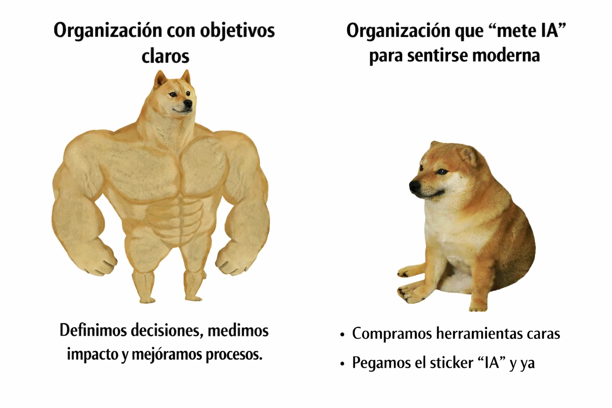

estrategIA #126 ·
La pegatina de la modernidad
El contexto
Los dos Doge comparan una organización que sabe para qué utiliza IA con otra que la compra para aparentar modernidad. El contraste acompaña la llamada del número a transformar procesos y medir resultados.
Publicado en: estrategIA 126 - Pensar la IA: de la adopción acrítica a la transformación organizativa y educativa
Leer el texto de la imagen
Organización con objetivos claros Definimos decisiones, medimos impacto y mejoramos procesos. Organización que “mete IA” para sentirse moderna • Compramos herramientas caras • Pegamos el sticker “IA” y ya